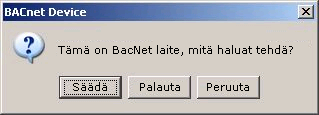

Siirry sivulle joka sisältää arvon, jonka haluat palauttaa säädölle. Napsauta sitten painiketta tai kuvaa, joka mahdollistaa kyseisen arvon muuttamisen,.
Napsauta  arvon vieressä.
arvon vieressä.
Kun 963 säätää arvon BACnet-laitteeseen, se kirjaa sen arvojen prioriteettilistaan. Arvo säilyy listassa ja sitä käytetään sen ollessa ylimpänä. Tarvittaessa 963:n tekemä muutos voidaan palauttaa poistamalla arvo listalta.
BACnet-arvon palauttaminen säädölle:
Siirry sivulle, joka sisältää arvon, jonka haluat palauttaa säädölle, ja napsauta sitten painiketta tai kuvaa, joka mahdollistaa kyseisen arvon muuttamisen.
Tai
Siirry arvoon, jonka haluat palauttaa säädölle, Laitenäytössä, napsauta arvoa hiiren oikealla painikkeella ja napsauta Muuta pisteen arvoa.
BACnet-laite -keskusteluruutu tulee näkyviin.

Napsauta Palauta säädölle.
BACnet-arvon palauttaminen säädölle tekstitilassa:
Siirry sivulle joka sisältää arvon, jonka haluat palauttaa säädölle. Napsauta sitten painiketta tai kuvaa, joka mahdollistaa kyseisen arvon muuttamisen,.
Napsauta arvon vieressä.